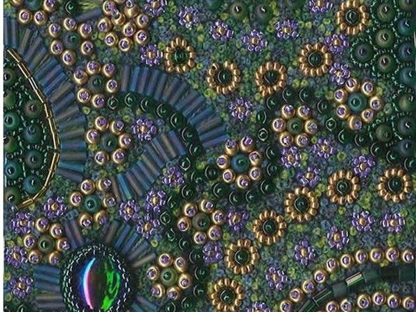

История бисероплетения
Предшественники бисера – камни и клыки животных, в которых древние люди проделывали отверстия, дабы нанизать на веревки. В те времена эти украшения носили характер культа, служили оберегами и талисманами. Орешки и ракушки, семена и стручки, кости и когти становились тогда материалом для создания бус. И носили подобные украшения, прежде всего, мужчины, верившие, что они придадут им силы, мужественности, защитят от зверя.
Родиной же бисера считается Древний Египет. Великая цивилизация подарила миру материал, который уже несколько тысячелетий подвигает людей на новые творческие свершения. Появился бисер благодаря изобретению стекла, первые бусинки из непрозрачного стекла и стали благодатным материалом для выполнения красивейших изделий. Стеклянными бусинками декорировали одеяния фараона, из бисера делались шикарные ожерелья, ими украшались платья.
Вскоре бисер появился и в Сирии, а уже потом переняла опыт этих стран и могущественная Римская Империя. Так тонкое рукоделие постепенно охватило весь мир. Китайцы даже изобрели специальное счетное устройство, на котором бусинки стали бегать по проволочкам, помещенным в деревянную раму. Так появились счеты.
Доказано, что древние викинги и кельты тоже владели искусством бисероплетения: они имели свои узоры и схемы, делали браслеты и бусы, украшали бисером одежду. Интересно, что у некоторых народов бисер служил даже разменной монетой. Археологи установили, что кочевые племена скифов и сарматов украшали обувь и одежду бисером, и было это за несколько столетий до нашей эры.
Если же назвать лишь одно место, ставшее настоящим мировым центром бисероплетения, это, конечно, будет Венеция. И долгое время она была единственным буквально центром производства ценного материала, поставляя его на Запад и Восток. К концу 18 века конкуренцию венецианскому товару составил продукт из Чехии. С тех пор изготовление бисера развито во многих странах мира. Но, к слову, чешский бисер и сегодня считается брендовым продуктом, хотя конкурентов у него нынче очень много.